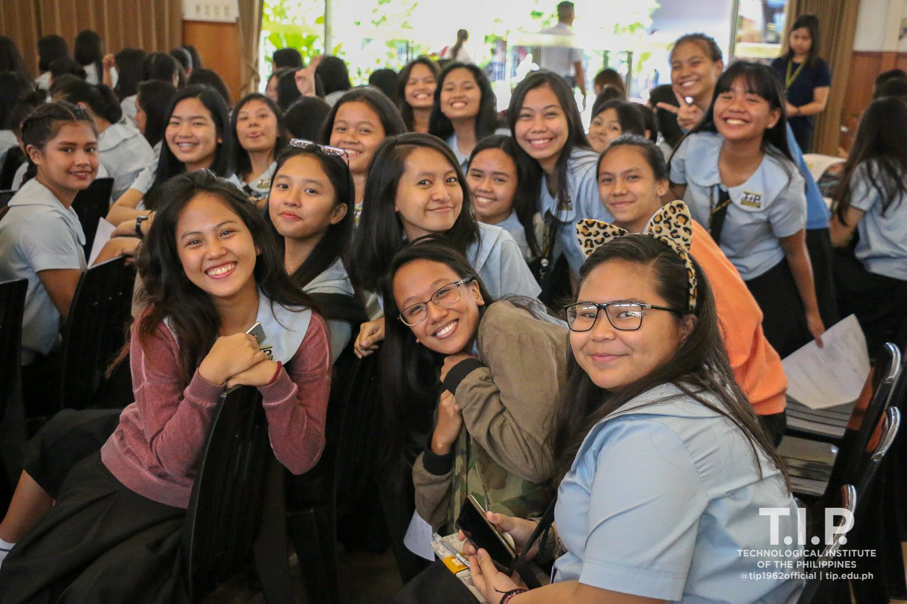

|

Vision
In the year 2020, T.I.p. envisions itself to be:
- a leading professional technological institution in the Philippines through
- outcomes-based education, and
- a culture of innovation and continuous improvement, and
- an institution whose graduates contribute to the welfare of society
Mission
The Technological Institute of the Philippines (T.I.P.) is committed:
-
to continue to empower the Filipino youth through technological education
of the highest standard, employing outcomes-based education
and state-of-the-art laboratories
-
to transform students into graduates with full competence in their fields
of study and who also possess:
-
The Filipino values of honesty and integrity, service to others,
the importance of family, frugality, resilience in the face of adversity,
and the willingness to surmount difficulties in order to succeed and excel.
-
The industry-desired values of positive work attitude, good communication
skills, proficiency in computers and in the software that pertain to their
fields of study, initiative, and the openness to keep on learning to reinvent themselves.
-
The global citizen values of mindfulness, respect for cultural diversity, care for the
environment and the desire to contribute to the general welfare of society.
|